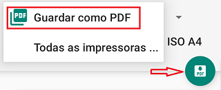

Total de MasculinosTotal de FemininosNº Total de ConsultasPrimeiras Consultas0-5 Meses6-11 Meses12-23 Meses24-59 Meses5-14 AnosTotal de Primeiras ConsultasConsultas Seguintes0-5 Meses6-11 Meses12-23 Meses24-59 Meses5-14 AnosTotal de Consultas SeguintesTOTAL DE CONSULTAS dos 0-14 anos (1ªs e Consultas Seguintes)
Baixo peso/Idade moderadoBaixo peso/Idade graveDesnutrição Aguda moderadaDesnutrição Aguda grave
Anemia em crianças 0-5 meses por diagnóstico clínico
Anemia em crianças 6-23 meses por diagnóstico clínico
Anemia em crianças 24-59 meses por diagnóstico clínico
Anemia em crianças 5-14 anos por diag‐ nóstico clínico
Tratamento com sal ferroso
Total de crianças observadas na CCD com baixo peso/idade moderado
Total de crianças observadas na CCD com baixo peso/idade grave
Total de crianças observadas na CCD com desnutrição aguda moderada
Total de crianças observadas na CCD com desnutrição aguda grave
No de crianças 0-5 meses clinicamente diagnosticadas com anemia
No de crianças 6-23 meses clinicamente diagnosticadas com anemia
No de crianças 24-59 meses clinicamente diagnosticadas com anemia
No de crianças 5-14 anos clinicamente diagnosticadas com anemia
Total de crianças com anemia que iniciaram tratamento com sal ferroso
Número de crianças 6-11 meses suplementadas com vitamina A Número de crianças 12-59 meses suplementadas com vitamina ANúmero de crianças 12-59 meses que receberam desparasitanteTotal de crianças elegíveis para testagemTotal de crianças testadasTotal de crianças com teste HIV positivoTotal de crianças com teste HIV negativoTotal de crianças com teste HIV indeterminadoTotal de crianças que iniciaram profilaxia com CTZTotal de crianças que referem contacto com TBTotal de crianças com sinas e sintomas de tuberculose
Total de crianças de 0-59 meses com atraso de desenvolvimento psicomotor identificado pela 1ª vez.
Total de crianças de 0-59M com resultado do Teste de Malária Positivo (TDR ou HTZ)Total de crianças de 0-59M com resultado do Teste de Malária Negativo (TDR ou HTZ)Total de crianças de 5-14A com resultado do Teste para Malária Positivo (TDR ou HTZ)Total de crianças de 5-14A com resultado do Teste para Malária Negativo (TDR ou HTZ)
Total de crianças de 0-59 meses com diagnóstico de novo caso de Malária confirmada e tratadas com AL (Coartem)
Total de crianças de 0-59 meses com diagnóstico de novo caso de Malária confirmada e tratadas com Artesunato+Amodiaquina (ASAQ)
Total de crianças de 0-59 meses com diagnóstico de novo caso de Malária confirmada e tratadas com Artesunato (AS)
Total de crianças de 0-59 meses com diagnóstico de novo caso de Malária confirmada e tratadas com Quinino
Total de crianças de 5-14 anos com diagnóstico de novo caso de Malária confirmada e trata‐ das com AL (Coartem)
Total de crianças de 5-14 anos com diagnóstico de novo caso de Malária confirmada e trata‐ das com Artesunato+Amodiaquina (ASAQ)
Total de crianças de 5-14 anos com diagnóstico de novo caso de Malária confirmada e tratadas com Artesunato (AS)
Total de crianças de 5-14 anos meses com diagnóstico de novo caso de Malária confirmada e trata‐ das com Quinino
Total de crianças de 0-59 meses diagnosticadas como novo caso de Diarreia
Total de crianças de 0-59 meses diagnosticadas como novo caso de Diarreia e tratadas com SRO e ZINCO
Total de crianças de 0-59 meses diagnosticadas como novo caso de Diarreia e tratadas só com ZINCO
Total de crianças de 0-59 meses diagnosticadas como novo caso de Diarreia e tratadas só com SRO
Total de crianças de 5-14A diagnosticadas como novo caso de Diarreia
Total de crianças de 5-14A diagnosticadas como novo caso de Diarreia e tratadas com SRO e ZINCO
Total de crianças de 5-14A diagnosticadas como novo caso de Diarreia e tratadas só com ZINCO
Total de crianças de 5-14A diagnosticadas como novo caso de Diarreia e tratadas só com SROTotal de crianças de 0-59 meses diagnosticadas como novo caso de Disenteria
Total de crianças de 0-59 meses diagnosticadas como novo caso de Disenteria e tratadas com Ciprofloxacina
Total de crianças 5-14A diagnosticadas como novo caso de Disenteria
Total de crianças 5-14A diagnosticadas como novo caso de Disenteria e tratadas com Ciprofloxacina
Total de crianças de 0-59 meses diagnosticadas como novo caso de Pneumonia
Total de crianças de 0-59 meses diagnosticadas como novo caso de Pneumonia e tratadas com Amoxicilina
Total de crianças 5-14A diagnosticadas como novo caso de Pneumonia
Total de crianças 5-14A diagnosticadas como novo caso de Pneumonia e tratadas com Amoxicilina
Total de crianças de 0-59 meses diagnosticadas como novo caso de outras doençasTotal de crianças de 5-14A diagnosticadas como novo caso de outras doenças
Total de crianças referidasTotal de crianças referidas para Consulta de criança em riscoTotal de crianças referidas para Urgência de Pediatria ou Banco de Socorros/InternamentoTotal de crianças referidas para Consulta Médica/Especializada/Doença crónica
Linha:Faixa etária:Sexo:
Totalizador de Resumo Mensal de CCD
A utilização do totalizador é, de facto, uma garantia de um resumo correctamente totalizado, porém, isso simplesmente, não define a qualidade do resumo. Você é o único responsável pela veracidade, lógica e concordância dos dados preenchidos e, portanto, pela qualidade do resumo. O totalizador só se limita a calcular os totais baseando-se exactamente nos dados que você fornece.
Totalizador de Resumo Mensal de CCD
Esvaziar ficha
Tem certeza de que pretende esvaziar a ficha?
Esta acção não pode ser desfeita.
Dados adicionais
Visão geral sobre o totalizador
O Totalizador de Resumo Mensal de CCD é um serviço online gratuito, que auxilia na elaboração, como o nome sugere, do resumo mensal de CCD, por meio do cálculo automático dos totais, com base nos dados preenchidos pelo usuário. Foi criado de acordo com o modelo da ficha de resumo mensal de CCD actualmente vigente no Serviço Nacional de Saúde em Moçambique.
Objectivos
Calcular correcta e automaticamente os totais;
Preencher automaticamente os totais nas células correspondentes;
Minimizar possíveis erros de totalização, sobretudo por confusão (por exemplo, somar inadvertidamente células não correspondentes ou registar o total da linha A, na linha B);
Expandir o acesso às fichas de resumos mensais, pois os totalizadores também constituem uma fonte universal de algumas fichas de resumos mensais para todos com acesso à internet.
O que eu preciso dispor para, e como utilizar o totalizador?
Um telemóvel ou computador com acesso à internet.
Ter colhido os dados de todos os indicadores da ficha nas fontes primárias (livro(s) de registo) da sua Unidade Sanitária.
E por fim, preencher os dados nas células correspondentes quanto ao indicador e variáveis (sexo e faixa etária), e consequentemente os respectivos totais são, em tempo real, correcta e automaticamente calculados.
A utilização do totalizador é, de facto, uma garantia de um resumo correctamente totalizado, porém, isso simplesmente, não define a qualidade do resumo. Você é o único responsável pela veracidade, lógica e concordância dos dados preenchidos e, portanto, pela qualidade do resumo. O totalizador só se limita a calcular os totais baseando-se exactamente nos dados que você fornece.
Qual é o destino dos dados que eu insiro?
São guardados localmente (no navegador que estiver a usar), por meio de um recurso chamado Web Storage e você tem total controle sobre esses, podendo mantê-los ou apagá-los por meio da opção "Esvaziar ficha" no menu do totalizador ou esvaziando o histórico (inclusíve os cookies) do seu navegador.
Vantagens do totalizador
Calcula automaticamente os totais;
Preenche automaticamente as células correspondentes aos totais;
Fornece resultados (totais) exactos;
Flexibiliza a elaboração do resumo;
Pode ser impresso, inclusíve como uma simples ficha de resumo mensal;
Pode ser guardado como PDF.
Limitações do totalizador
Não alerta sobre discrepância de dados, portanto, a análise da qualidade e lógica do resumo é inteiramente dependente do usuário;
Disponibilidade remota (é necessário um telemóvel ou computador com acesso à internet para ser acessado).
Ajuda e Procedimentos
Realçar totais
Adiciona um fundo cinza a todas as células dos totais. Estas têm o acesso interdito e a funcionalidade de realçá-las, permite facilmente distinguir estas de outras células. Muito útil em dispositivos móveis.
Ir para a linha...
Abre um campo no qual pode digitar um número de linha no intervalo de 1 à 73 e, uma vez digitado o número, a página rola até a linha correspondente ao número.
Esvaziar ficha
Comando para limpar as células da ficha após a confirmação da acção na caixa de diálogo que abre.
Permite também esvaziar campos adicionais (Província, Distrito, US, etc.) de forma seletiva. Para tal, na caixa de diálogo de confirmação, as "checkboxes" dos dados adicionais são, por padrão, marcadas com o sinal de "✔", indicando, desse modo, que o conteúdo contido nos respectivos campos será eliminado, mas caso queira manter a informação de um campo específico, basta desmarcá-lo clicando directamente sobre a ckeckbox ou sobre a sua descrição.
Legenda: Caixa de diálogo de esvaziamento da ficha. Neste caso, os campos de Provínica, Distrito e Unidade Sanitária seriam preservados (por ter suas checkboxes desmarcadas). Todos os outros cujas "checkboxes" estão marcadas, teriam seus campos esvaziados.Salvar ficha como PDF
No computador:
Clique na opção Imprimir no menu do totalizador.
Na janela que abrirá, no campo de Impressora ou Destino
selecione a opção Salvar como PDF.
Por fim, clique em Salvar e escolha um destino no seu computador.
No celular / tablet:
Toque na opção Salvar como PDF no cabeçalho do totalizador.
Na janela seguinte, logo abaixo da opção Tamanho de papel ou Paper size (dependendo do idioma do seu navegador), toque na seta em forma de V para expandir as configurações.
No campo de Tamanho de papel ou Paper size, selecione ISO A4 e no de Orientação ou Orientation, selecione Paisagem ou Landscape.

Por fim, clique no simbolo de disquete e escolha um destino no seu telemóvel para salvar o resumo.
Algumas células mudaram de cor de fundo para vermelho
As células do totalizador têm um tamanho para conter, visivelmente, 7 algarismos no máximo, isto é, mostram valores até, no máximo, 9999999. Quando a célula recebe um número com mais de 7 algarismos, dá um alerta ao usuário ficando vermelha e, eventualmente, mostrando uma mensagem de texto com informação sobre a omissão dos algarismos e o real motivo.
Para um país como Moçambique, em que o número de habitantes é de pouco mais de 30 milhões (dados demográficos de 2019), podemos presumir que, actualmente, nenhuma Unidade Sanitária tem um número mensal de dados, de algum indicador de qualquer que seja a sua natureza, acima de 9999999.